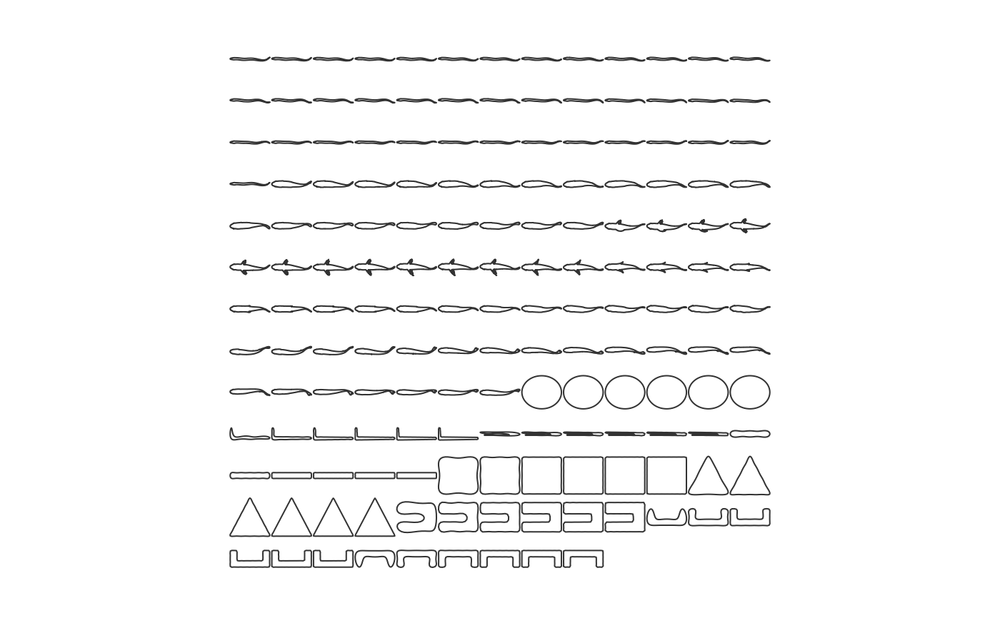

fish-shapes.RdContour data constructed with the Momocs package of several fish shapes and arbitrary polygons. Intended for training of PCA and LDA analysis with LDA. Shapes are classified with shape, type, and edge factors.
data(fishshapes)
An object of class "Out" and "Coo"; see Out.
'shape': names the contour
'type': classifies the shape as 'fish' or not.fish'
'edge': is every coordinate of the contour represented, i.e., not cut off by an edge of the field? One level of 'FALSE'.
Shapes of type 'fish' include the follow classification levels:
'eel' (genus Anguilla) swimming with body undulations
'sunfish_BCF' (genus Lepomis) swimming with body-caudal fin propulsion
'sunfish_pect' (genus Lepomis) swimming with both body-caudal fin and pectoral fin oscillations
'trout' (genus Oncorhynchus) swimming with body-caudal fin propulsion
Each of these fish types include contours sampled regularly over one tail-beat cycle.
Shapes of type 'not.fish' include 'Ellipse', 'Lshape', 'Ushape', Ushape2', 'Ushape3','triangle', 'rectangle', and 'square'. Each 'not.fish' type was resampled 6 times with different efourier analyses with 'nb.h' values ranging from 5 to 30. This produces shape classes with subtly variable contours.
The 'edge' factor is included so as to have the classification factors match those of the efourier and LDA analysis in kin.LDA.
fishshapes,Contour data of fish and arbitrary shapes,Contour data of fish and arbitrary shapes — fishshapes,fish-shapes.Rd,character(0),fishshapes,datasets,list(title = "Description", contents = "Contour data constructed with the
"),list(description = "Contour data constructed with the Momocs package of several fish shapes and arbitrary polygons. Intended for training of PCA and LDA analysis with LDA. Shapes are classified with shape, type, and edge factors."),data(fishshapes),Momocspackage of several fish shapes and arbitrary polygons. Intended for training of PCA and LDA analysis withLDA. Shapes are classified with shape, type, and edge factors.#> #>#> #> #>,list(list(title = "Format", contents = "An object of class
", slug = "format"), list(title = "Details", contents = "\n\"Out\"and\"Coo\"; seeOut.
'shape': names the contour
'type': classifies the shape as 'fish' or not.fish'
'edge': is every coordinate of the contour represented, i.e., not cut off by an edge of the field? One level of 'FALSE'.
Shapes of type 'fish' include the follow classification levels:
'eel' (genus Anguilla) swimming with body undulations
'sunfish_BCF' (genus Lepomis) swimming with body-caudal fin propulsion
'sunfish_pect' (genus Lepomis) swimming with both body-caudal fin and pectoral fin oscillations
'trout' (genus Oncorhynchus) swimming with body-caudal fin propulsion
Each of these fish types include contours sampled regularly over one tail-beat cycle.
\nShapes of type 'not.fish' include 'Ellipse', 'Lshape', 'Ushape', Ushape2', 'Ushape3','triangle', 'rectangle', and 'square'. Each 'not.fish' type was resampled 6 times with different efourier analyses with 'nb.h' values ranging from 5 to 30. This produces shape classes with subtly variable contours.
The 'edge' factor is included so as to have the classification factors match those of the efourier and LDA analysis in kin.LDA.